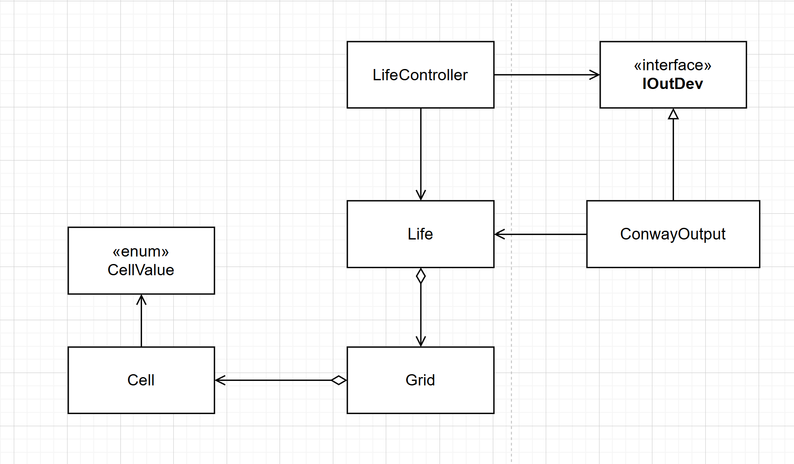

Introduction
Requirements
Requirement analysis
Problem analysis
Test plans
Project
Di seguito sono elencate alcune possibili soluzioni adottate per ovviare ai problemi sopra citati e un diagramma illustrativo delle dipendenze tra i vari moduli/classi del sistema
- Introduzione di una classe Cell e una classe Grid che andranno a modellare la griglia del gioco
- Introduzione di una classe enumerativa CellValue in modo che le celle possano assumere solo valori ben definiti
- Modifica dell'interfaccia IOutDev e della classe ConwayOutput in modo che queste possano stampare la matrice a partire da un oggetto Life in modo autonomo
-
Eliminazione di tutta la logica di output che risiede nella classe LifeController e Life in modo che solamente la classe LifeController possa richiedere i servizi
di output al dispositivo di cui avrà un riferimento.

Testing
Deployment
Maintenance
By Lorenzo Zoccadelli email: lorenzo.zoccadelli@studio.unibo.it,

GIT repo: https://github.com/Lorenzo-Zoccadelli/iss_lab_2025.git